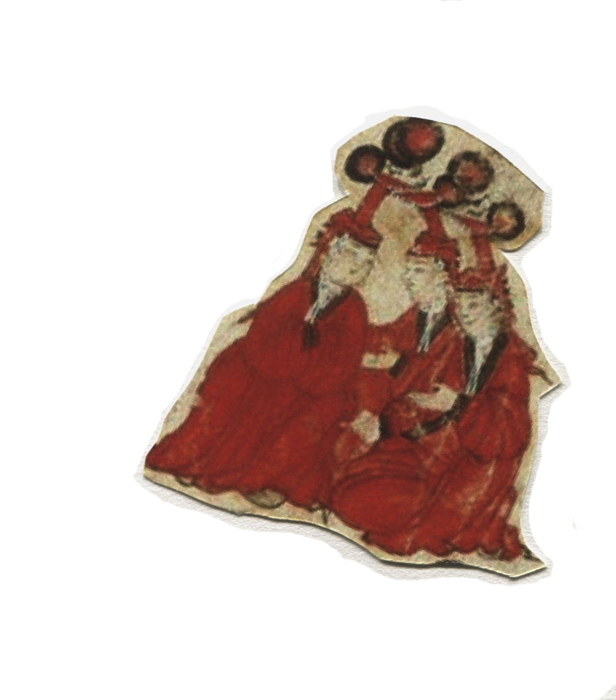
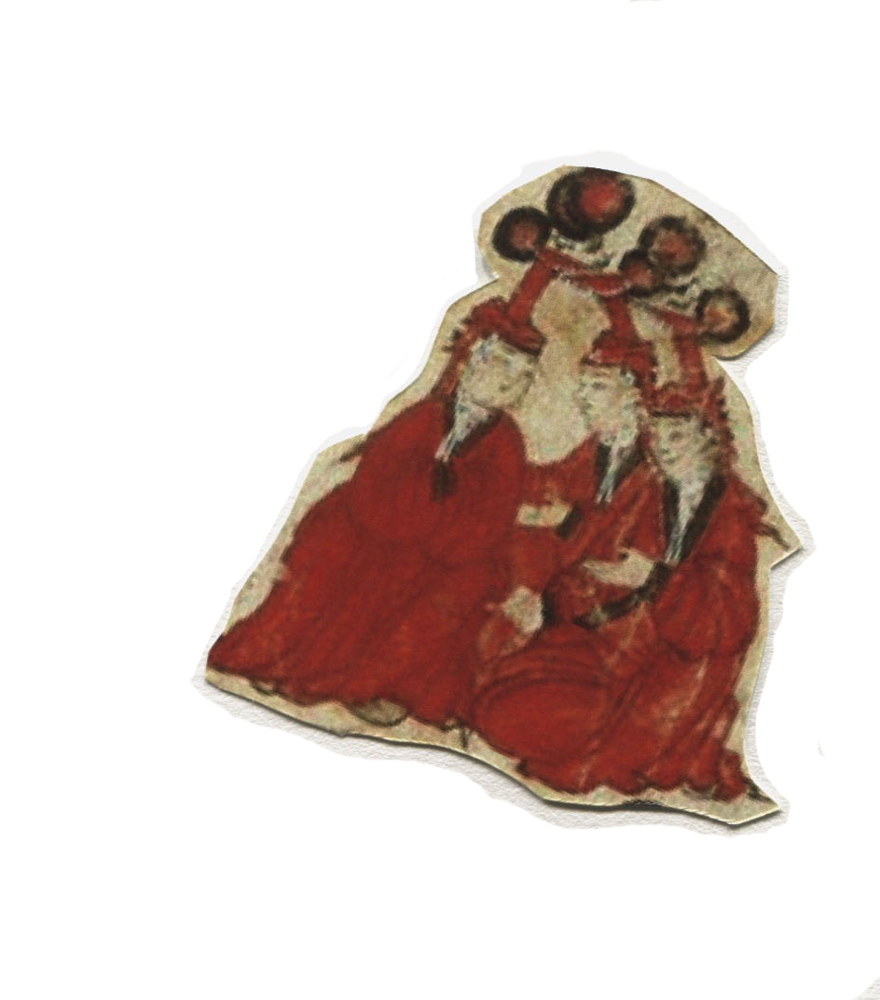
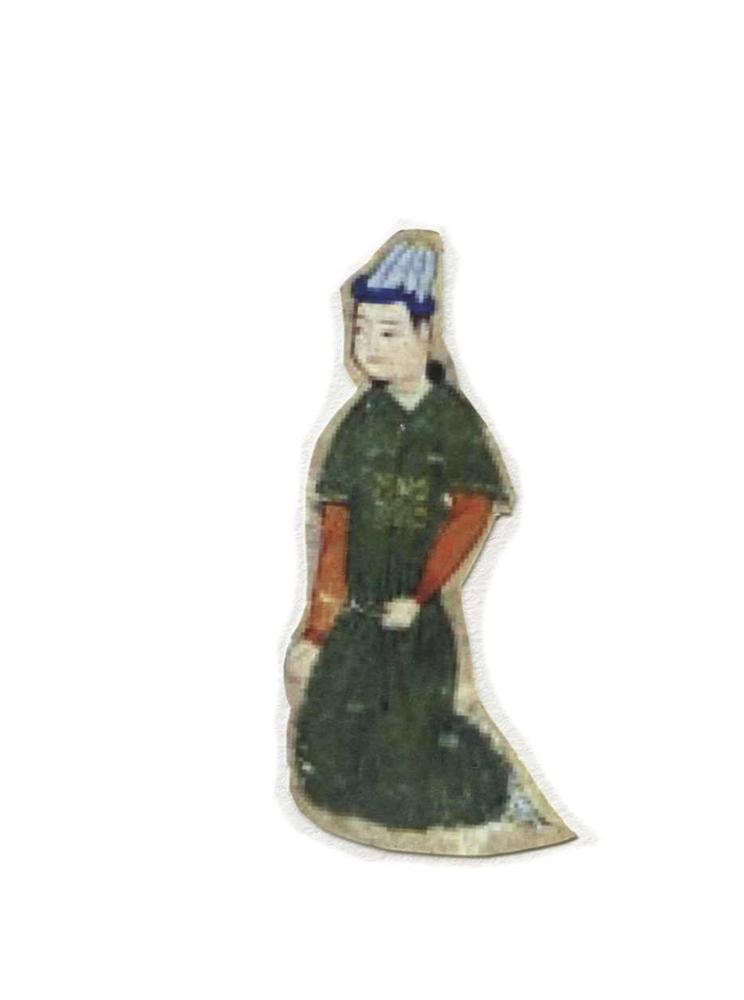
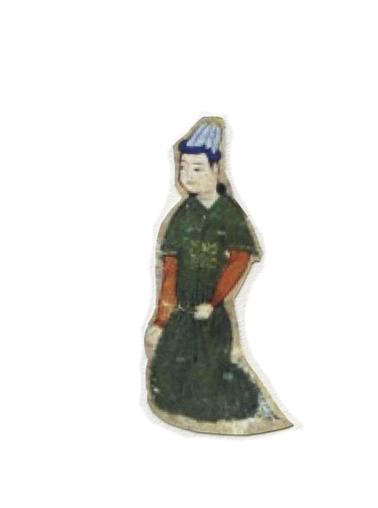

genghis khan
life and reign of the legendary ruler
 

Temüjin was probably born in 1162 in Delüün Boldog, near the mountain Burkhan Khaldun and the rivers Onon and Kherlen in modern-day northern Mongolia, close to the current capital Ulaanbaatar. The Secret History of the Mongols reports that Temüjin was born grasping a blood clot in his fist, a traditional sign that he was destined to become a great leader. He was the second son of his father Yesügei who was a Kiyad chief prominent in the Khamag Mongol confederation and an ally of Toghrul of the Keraite tribe.
Yesukhei's clan was Borjigin (Боржигин), and Hoelun was from the Olkhunut sub-lineage of the Khongirad tribe. Like other tribes, they were nomads. Temüjin's noble background made it easier for him to solicit help from and eventually consolidate the other Mongol tribes. At this time,dozens of nomadic tribes on the central Asian steppe were constantly fighting and stealing from each other, and life for Temujin was violent and unpredictable. Before he turned 10, his father was poisoned to death by an enemy clan. Temujin’s own clan then deserted him, his mother and his six siblings in order to avoid having to feed them.
Shortly thereafter, Temujin killed his older half-brother and took over as head of the poverty-stricken household. At one point, he was captured and enslaved by the clan that had abandoned him, but he was eventually able to escape. In 1178 Temujin married Borte, with whom he would have four sons and an unknown number of daughters. He launched a daring rescue of Borte after she too was kidnapped, and he soon began making alliances, building a reputation as a warrior and attracting a growing number of followers. Most of what we know about Genghis Khan’s chil hood comes from “The Secret History of the Mongols,” the oldest known work of Mongolian history and literature, which was written soon after his death.
Going against custom, Temujin put competent allies rather than relatives in key positions and executed the leaders of enemy tribes while incorporating the remaining members into his clan. He ordered that all looting wait until after a complete victory had been won, and he organized his warriors into units of 10 without regard to kin. Though Temujin was an animist, his followers included Christians, Muslims and Buddhists. By 1205 he had vanquished all rivals, including his former best friend Jamuka. The following year, he called a meeting of representatives from every part of the territory and established a nation similar in size to modern Mongolia. He was also proclaimed Chinggis Khan, which roughly translates to “Universal Ruler,” a name that became known in the West as Genghis Khan.
 

The Mongol Empire was governed by a civilian and military code, called the Yassa, created by Genghis Khan. The Mongol Empire did not emphasize the importance of ethnicity and race in the administrative realm, instead adopting an approach grounded in meritocracy. The exception was the role of Genghis Khan and his family. The Mongol Empire was one of the most ethnically and culturally diverse empires in history, as befitted its size. Many of the empire's nomadic inhabitants considered themselves Mongols in military and civilian life, including Mongols, Turks and others and included many diverse Khans of various ethnicities as part of the Mongol Empire such as Muhammad Khan.
There were tax exemptions for religious figures and, to some extent, teachers and doctors. The Mongol Empire practiced religious tolerance because Mongol tradition had long held that religion was a personal concept, and not subject to law or interference.[citation needed] Sometime before the rise of Genghis Khan, Ong Khan, his mentor and eventual rival, had converted to Nestorian Christianity. Various Mongol tribes were Shamanist, Buddhist or Christian. Religious tolerance was thus a well established concept on the Asian steppe.
Modern Mongolian historians say that towards the end of his life, Genghis Khan attempted to create a civil state under the Great Yassa that would have established the legal equality of all individuals, including women.[49] However, there is no evidence of this, or of the lifting of discriminatory policies towards sedentary peoples such as the Chinese. Women played a relatively important role in Mongol Empire and in family, for example Töregene Khatun was briefly in charge of the Mongol Empire when next male Khagan was being chosen. Modern scholars refer to the alleged policy of encouraging trade and communication as the Pax Mongolica (Mongol Peace).
Genghis Khan died in August 1227, during the fall of Yinchuan, which is the capital of Western Xia. The exact cause of his death remains a mystery, and is variously attributed to being killed in action against the Western Xia, illness, falling from his horse, or wounds sustained in hunting or battle. According to The Secret History of the Mongols, Genghis Khan fell from his horse while hunting and died because of the injury. He was already old and tired from his journeys. The Galician–Volhynian Chronicle alleges he was killed by the Western Xia in battle, while Marco Polo wrote that he died after the infection of an arrow wound he received during his final campaign.[44] Later Mongol chronicles connect Genghis's death with a Western Xia princess taken as war booty. One chronicle from the early 17th century even relates the legend that the princess hid a small dagger and stabbed him, though some Mongol authors have doubted this version and suspected it to be an invention by the rival Oirads.
Years before his death, Genghis Khan asked to be buried without markings, according to the customs of his tribe. After he died, his body was returned to Mongolia and presumably to his birthplace in Khentii Aimag, where many assume he is buried somewhere close to the Onon River and the Burkhan Khaldun mountain (part of the Kentii mountain range). According to legend, the funeral escort killed anyone and anything across their path to conceal where he was finally buried. The Genghis Khan Mausoleum, constructed many years after his death, is his memorial, but not his burial site.